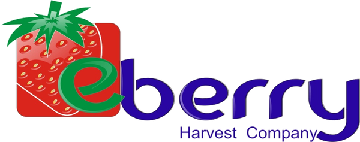

👋 Bienvenido
Contrato
—
✅
Rancho autorizado
—

Toca quiénes trabajaron en esta actividad:
¿Qué deseas hacer?
"Nuevo día" borra workers, actividades grupales, ausencias y horarios. Preserva rancho y finca.
Escanea los QR de chofer y surquero antes de capturar trabajadores. La hora del check-in queda congelada y no se puede editar.
Cada actividad puede tener su propio horario.
Guardado localmente en el dispositivo
¿Crees que perdiste días? Toca este botón para revisar TODA tu memoria y encontrar archivos escondidos que la app no esté mostrando. Después podrás mandarle el archivo a Serafín por WhatsApp para que él los recupere.
Carga un archivo de un año/rancho previamente exportado para consultarlo.